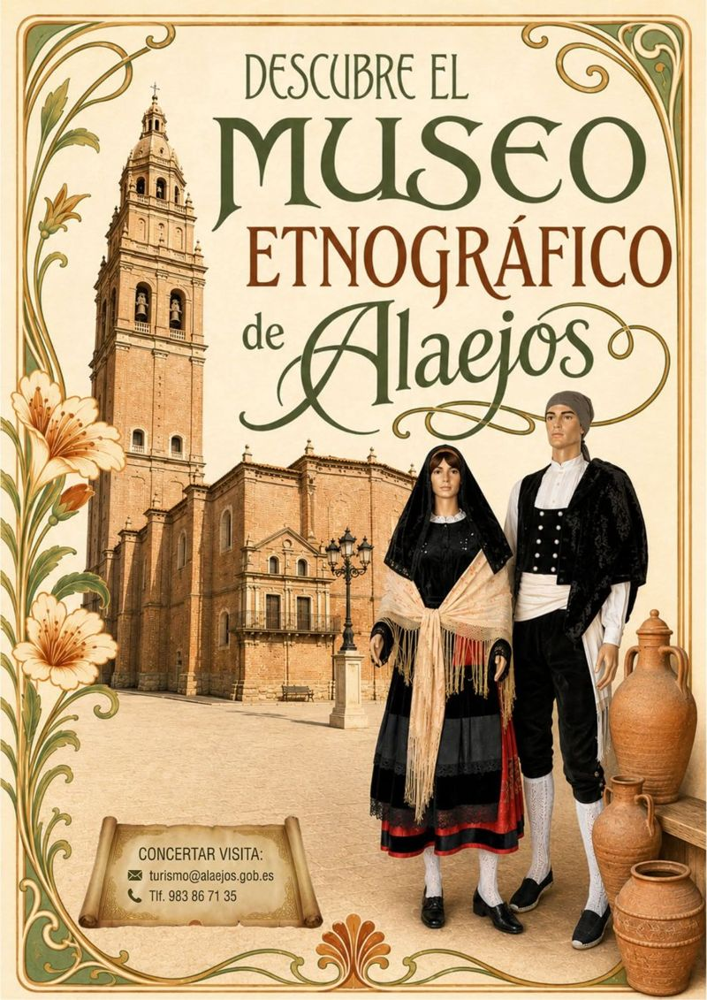

Visitar Alaejos
Qué ver en Alaejos, cómo concertar una visita guiada y un paseo por el pueblo, de la Plaza Mayor a la ermita de la Casita.
En esta página (7 apartados · 5 min de lectura)
Alaejos se ve desde lejos por sus dos torres. Tiene dos iglesias del siglo XVI, un museo de arte sacro, las ruinas del castillo de los Fonseca, un museo etnográfico, una Plaza Mayor con soportales y varias casas blasonadas, y es Conjunto Histórico desde 1997. Esta página reúne lo práctico. La historia de cada lugar está en su propia página, enlazada desde aquí.
La Oficina de Turismo
Es el punto de partida. Allí se reservan las visitas guiadas y se informa de las actividades del año. Teléfono 983 867 135, correo turismo@alaejos.gob.es y, en Facebook, «Turismo Alaejos».
| Temporada | Días y horas |
|---|---|
| Del 1 de abril al 30 de septiembre | Martes, de 17:00 a 19:00. De miércoles a domingo, de 10:00 a 13:30 y de 17:00 a 19:30 |
| Del 1 de octubre al 31 de marzo | Viernes, de 16:00 a 18:30. Sábados y domingos, de 10:00 a 13:30 y de 17:00 a 19:30 |
Las visitas guiadas
El Ayuntamiento ofrece dos rutas guiadas gratuitas, siempre con reserva previa en la Oficina de Turismo. Salen cuando se completa un grupo de entre 6 y 20 personas.
- «Alaejos, tradición mudéjar»: las iglesias y el patrimonio artístico de la villa. Se ha anunciado los sábados a las 11:00 de abril a septiembre y a las 11:30 de octubre a marzo.
- «Vamos a pisar historia»: las ruinas del castillo-fortaleza de los Fonseca, con su foso, sus pasadizos y el pozo de nieve.
En verano el castillo acoge además los «Episodios históricos en el castillo de Alaejos», visitas guiadas y teatralizadas gratuitas, también con reserva. En 2026 se hicieron el 2 y el 9 de agosto.
Qué ver
- Iglesia de Santa María y Museo Interparroquial de Arte Sacro, en la plaza de Santa María, 2. Las armaduras mudéjares, el retablo de Esteban Jordán y, bajo la torre, escultura, pintura y orfebrería de las dos parroquias. Según el Ayuntamiento, de abril a octubre abre los martes de 17:00 a 19:30, y de miércoles a domingo y festivos de 10:00 a 13:30 y de 17:00 a 19:30; el resto del año hay que concertar la visita en el teléfono 983 867 189. La entrada es gratuita.
- Iglesia de San Pedro, en la Plaza Mayor. El retablo mayor, el retablo plateresco que procede de Valdefuentes, el coro y el órgano barroco. Su torre está en restauración. Para verla por dentro, pregunte en la Oficina de Turismo.
- La Plaza Mayor, con sus soportales y el Ayuntamiento del reloj.
- Las casas blasonadas, repartidas por el casco: la del Inquisidor en la calle Ramón y Cajal, las de la calle Zabacos y las de Lucas Martín.
- Las ruinas del castillo, al oeste del casco, con visita guiada.
- El Museo Etnográfico y su bodega, con visita concertada. Lo contamos más abajo.
- La ermita de la Virgen de la Casita, a unos dos kilómetros al este, en el camino de Siete Iglesias. Es el santuario de la patrona.
El Museo Etnográfico y su bodega


El Museo Etnográfico de Alaejos ya está abierto. Según el Ayuntamiento, muestra «la historia, la cultura y la vida cotidiana de la Villa a través de los objetos y útiles de la tradición, los usos y las costumbres», desde finales del siglo XIX. Sus piezas las han cedido particulares y vecinos de Alaejos.
Lo más singular está bajo tierra. En el subterráneo del edificio se ha recuperado una bodega tradicional de elaboración y almacenamiento del vino, el que hizo famosa a la villa en los siglos XVI y XVII (publicación del museo en Facebook). Es una buena ocasión para ver por dentro una de las bodegas excavadas que había bajo casi todas las casas del pueblo; su historia está en El vino de Alaejos.
Se visita con cita previa, que se concierta en la Oficina de Turismo: 983 867 135 o turismo@alaejos.gob.es.
Un paseo por el pueblo
Sin guía, el pueblo se recorre a pie en una mañana. Esta ruta sigue los puntos del mapa:
- Plaza Mayor. Empiece bajo los soportales, con San Pedro y el Ayuntamiento enfrente. Busque el escudo en el frontón del balcón de la iglesia.
- La calle de la Fortaleza y Plaza. Era la calle principal de la villa cerrada, de la plaza al castillo, y también se llamó «de la Cárcel» (véase la cerca y sus puertas).
- El castillo y, con cita previa, el Museo Etnográfico y su bodega.
- Las casas blasonadas de las calles Ramón y Cajal, Zabacos y Lucas Martín, camino de Santa María.
- Santa María y su museo. En su plaza estuvo el hospital del Buen Pastor, la Casa de Misericordia de la Real Sociedad, hoy centro de salud.
- La ermita de la Casita, en coche o dando un paseo de unos dos kilómetros hacia el este.
Cuándo ir
Cualquier fin de semana permite la visita guiada, pero algunas fechas tienen algo más. En Semana Santa salen los pasos de las nueve cofradías y, el Miércoles Santo, se reparte el vino del Cristo de la Salud. El 10 de mayo es la romería de la Casita. En agosto se hacen las visitas teatralizadas al castillo y el Día del Alaejano Ausente, y del final de agosto al 10 de septiembre se celebran las fiestas patronales, con la charambita ante la Virgen y los encierros. Todas las fechas están en el calendario de fiestas.
Fuentes
- Ayuntamiento de Alaejos, «Museo Interparroquial de Arte Sacro de la Iglesia de Santa María».
- Diputación de Valladolid, Alaejos y «Visita Alaejos: tierra de mercaderes y tradición mudéjar».
- Horario de la Oficina de Turismo y rutas guiadas, según la agenda Vive Disfrutando.
- Museo Etnográfico de Alaejos, publicación en Facebook y cartel del Ayuntamiento (2026).
- La Voz de Medina, «Alaejos organiza dos visitas guiadas y teatralizadas gratuitas en su castillo en el mes de agosto» (julio de 2026).
Cómo citar esta página
Amigos de Alaejos, «Visitar Alaejos», https://www.amigosdealaejos.org/patrimonio/visitar-alaejos/ (revisión del 18/11/2026).